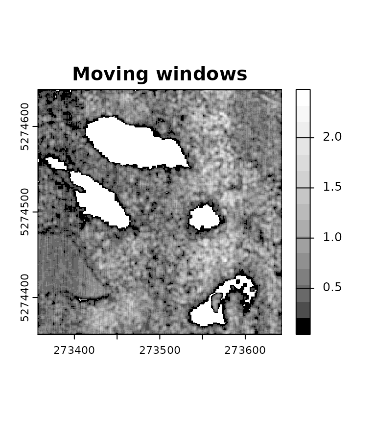

Concept
An area-based approach partitions the study area into cells and computes derived metrics from the points that lie within each cell. This method offers a straightforward means to map a value of interest across the territory. However, one drawback is that the mapping resolution is typically coarse, with cells typically measuring 20 x 20 meters, corresponding to 400 square meters of inventory plots used to build a predictive model. Achieving a finer resolution is not possible.
In lasR, we introduced the concept of Buffered Area Based Approach (BABA) or Moving Windows Area Based Approach (MWABA).
In BABA, metrics are computed using points within a cell of size s
(typically 20 meters), akin to classical ABA. However, the resolution of
the raster is effectively r due to a moving window that
progresses in steps of size r. For instance, we can compute
the average Z elevation for a 400 square meter area at a resolution of 5
meters, instead of the typical 20 meters.
Exemple 1
f <- system.file("extdata", "Megaplot.las", package="lasR")
aba = rasterize(20, "zmean") # ABA
baba = rasterize(c(5,20), "zmean") # BABA
pipeline = aba + baba
ans = exec(pipeline, on = f)
terra::plot(ans[[1]], col = col, main = "ABA")
terra::plot(ans[[2]], col = col, main = "BABA")

It’s important to emphasize that in BABA, although the resolution is set at 5 meters, the values of each pixel are computed based on a 20-meter cell. Each metric remains valid concerning a reference plot inventory, typically 400 square meters. Consequently, it becomes feasible to predict and map values of interest with a fine-grained resolution using regular plot inventory data.
Exemple 2
This approach also enables the mapping of point density with a finer resolution, among other possibilities.
f <- system.file("extdata", "Topography.las", package="lasR")
c1 <- rasterize(1, "count")
c2 <- rasterize(c(1,4), "count")
pipeline = c1 + c2
res <- exec(pipeline, on = f)
terra::plot(res[[1]]/4, col = gray.colors(15,0,1), main = "Regular") # divide by 4 to get the density
terra::plot(res[[2]]/25, col = gray.colors(15,0,1), main = "Moving windows") # divide by 25 to get the density